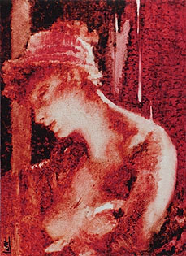
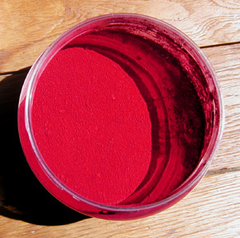
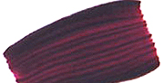

Les
laques
(couleurs)
|
Les couleurs dites "laques" doivent-elles forcément être rouges, pourpres ou carminées ?
Pas du tout.
En fait, originellement, le terme hindoustani
"LAKH" désigne une peinture brillante et
résistante ainsi qu'un procédé, un savoir-faire impliquant beaucoup de
soin ainsi que nous pouvons le constater au vu des oeuvres des maîtres laqueurs
asiatiques (voir La gomme laque, les laques et
La laque japonaise). Ce
même terme "lakh" est dans plusieurs langues en relation directe avec
l'eau (cf. un passage de
l'article précité). Or, les peintures dont il s'agit ont aussi pour la
plupart un point commun avec l'eau : la transparence, qui donne un effet
pictural lié à l'application en nombreuses couches.
Essentiellement et initialement, les laques ne sont
donc pas des couleurs mais des procédés de
peinture décorative ou artistique ayant un aspect plastique assez précis. Or,
les pigments (on parle ici de véritables pigments, non de colorants
fugaces) pouvant donner l'impression d'un laquage de
par une grande transparence intrinsèque
étaient assez peu nombreux avant la création des synthèses
pétrochimiques.
|
Sommaire
Une
"couleur laque" est-elle forcément végétale ?
Usages
typiques des "couleurs laques"
Limites
de l'application "couleur laque"
Laques
"classiques"
Laques
courantes
Réputations
tenaces
Les
laques contemporaines et "couleurs pour glacis" |

De ce
fait, il semblerait que le terme de "laque" ait fini par correspondre
durablement à une famille de pigments assez bien déterminés qui continue à
s'étendre au fil du temps ponctué par les inventions chromatiques. On y trouve
des violets, des jaunes, une bonne quantité de rouges (voir illustration
ci-dessous)
et des noirs, tous organiques chimiquement
parlant, semble-t-il.
Une "couleur laque" est-elle forcément végétale ?
Certains auteurs affirment ou sous-entendent que les laques sont les
pigments végétaux, par opposition aux pigments minéraux.
Nous donnerons à ce sujet un point de vue plus en... mi-teintes.
Le famille des laques a évolué. Elle
n'est pas un univers chromatique figé. Même le genre du mot laque peut varier
- lire encadré in la Gomme laque,
les laques. Un pigment (voire une préparation pluripigmentaire) non
végétal peut selon nous être considéré comme une laque dès l'instant où
il a une grande transparence et une certaine brillance. C'est le cas des
quinacridones et autres synthèses organiques contemporaines. Par contre,à part
quelques exceptions, les pigments minéraux sont trop mats et souvent trop opaques pour prétendre à
l'appellation de laque.
Il existe une certaine continuité entre pigments végétaux - généralement
organiques - et pigments issus
de la pétrochimie.
Lire
l'article Pigments organiques vs pigments inorganiques
Usages
typiques des "couleurs laques"
Bien souvent, de la gaude à
l'orseille en passant par la
garance, les "couleurs laques" ont servi de teintures. Dans
ce domaine, les "fixateurs de laques" les
plus classiques sont la
craie albuminée, l'amidon,
l'alun, etc.
En peinture, les "couleurs laques" se prêtent particulièrement,
par leur transparence, aux glacis.
Dans le domaine des technique des laques (gomme laque, urushi,
huiles chinoises, laques contemporaines), les "couleurs laques" n'ont
pas toujours été les préférées de tous les laqueurs ! Il n'est pas rare
qu'une armoire chinoise soit "laquée" avec un lourd mélange à base
d'oxyde de fer rouge très couvrant et très mat, agglutiné par une huile
cantonaise, tout à l'opposé des "couleurs laques" et des
"gommes laques".
Que dire sinon que le terme hindoustani originel qui fut à la base de
l'appellation "laque" a voyagé dans le temps et dans l'espace ? Il a
été associé à des pigments, des procédés de peinture et de teinture pour
des raisons variées.
Limites
de l'appellation "couleur laque"
Dans les
gammes de peintures proposées par les fabricants, quelques couleurs n'ayant guère de rapport avec des "couleurs laques" habituelles, ont
donné lieu à des "versions laques" par simple adjonction d'une charge
incolore. Celle-ci, souvent à base d'alumine et/ou de
silice, donne des couleurs qui
sortent un peu du cadre normal de cette appellation de par leur matité et leur
minéralité. Quelques industriels ont fait le choix intelligent de préférer
l'intitulé de "couleurs glacis".
Les limites de l'intitulé laque sont donc bien
présentes dans certains esprits. Pas tous : lire ci-dessous un
passage concernant d'étranges "laques de bitume".
Laques
"classiques"
Elles sont énumérées dans la page
"Laques anciennes".
Dans leur formulation originelle, elles ont peu de permanence et deviennent
transparentes. Au Moyen-âge et au-delà, les peintres anticipaient ce phénomène de
différentes manières et tout particulièrement en les associant au cinabre
(utilisé comme fond) qui a, lui, tendance à s'assombrir.
Comme nous l'écrivions ci-dessus, elles sont généralement pourpres, rouges ou
carminées à l'ouest du continent eurasiatique. La gaude, jaune, ne semble pas avoir percé dans le domaine des
Beaux-Arts. De même, les laques noires sont peu utilisées en peinture
occidentale, au contraire de l'Extrême-Orient.
Elles ont toutes une mauvaise réputation, infondée, quant
à leur aptitude au séchage ou à la siccativation et quant à leur permanence,
surtout en ce qui concerne leurs versions contemporaines (lire l'article "pigments
séchant mal"). Comme indiqué dans cet article, le kermès et les
cramoisis ne sont plus fabriqués avec les oeufs de cochenille et
l'alizarine a été remplacée en 1868 par Groebe et
Libermann, par une imitation à base d'anthracène, puis un "rouge
d'anthraquinone" d'une tenue déjà assez correcte. La "garance véritable" de certains fabricants est au
mieux, vraiment au mieux une alizarine de synthèse (lire l'article
sur cette couleur). A part de très rares fabricants de haut vol et
peut-être quelques paysans afghans, personne n'arrache plus les rhizomes de rubia
tinctorium. Quant aux produits anthraquinoniques, ils sont progressivement
remplacés par des mélanges plus permanents de type quinacridone +
dykéto-pyrrolo-pyrrole.
Voir aussi ci-dessous Réputations tenaces.

Laques
courantes
Les laques rouges plus ou moins violacées, c'est-à-dire les plus utilisées
sont
maintenant
* azoïques
* anthraquinoniques
* quinacridoniques/dykétopyrrolopyrroliques
(permanentes, voir photo ci-dessous)
* xanthiniques
*
aniliniques (fugaces).

Il s'agit d'hydrocarbures, non de cochenilles ni de racines d'herbes
rubiacées. La fugacité notoire de la plupart des laques ainsi que les coûts de production ont en effet suscité un effort
technologique dès le début du XIXème siècle.
Réputations
tenaces
La persistance de la réputation de lenteur au séchage
que ces pigments ont, malgré la transformation radicale de leur chimie à
laquelle nous assistons depuis un, deux ou trois siècles, pourrait
être due aux raisons suivantes :
*
les mauvaises réputations "collent à la peau", surtout dans le
milieu de la peinture - et ce n'est pas un mot d'esprit.
*
les colorants d'un rouge froid (pourpre, magenta, rose tyrien, etc.),
même contemporains, demeurent tous très peu couvrants bien que très colorants.
C'est un fait physique naturel.
*
en termes de tendances, la réaction logique d'un peintre non
averti qui
utiliserait ces pigments est d'ajouter encore et encore, vainement, des
couches de plus en plus épaisses, pour tenter de "couvrir"
davantage. C'est ainsi qu'il allongerait lui-même les temps de séchage.
Les "couleurs à laques" ne seraient donc pas moins
"siccatives" que d'autres, mais inciteraient le peintre à
considérer, comparativement à d'autres couleurs, qu'au regard de leur
facteur couvrant, elles sèchent plus lentement.
Tout semble indiquer que les laques sont encore les têtes de Turcs des
auteurs. Par exemple, l'un des plus célèbre - et des plus compétents - note que "Le blanc
d'argent les dévore", oubliant que la céruse (blanc d'argent) dévore
bien d'autres couleurs et substances et que les occasions de mélanger ou de
mettre en contact une
laque et un blanc, surtout aussi couvrant que celui-là, sont rarissimes.
Les
laques contemporaines et "couleurs pour glacis"
En fait, elles n'ont rien de contemporain. Depuis quelques siècles déjà,
d'autres teintes que les garances et autres alizarines sont employées en glacis
à l'aide de procédés très efficients.
La nouveauté, c'est l'initiative de certains fabricants qui proposent toutes
sortes de
couleurs apprêtées pour les glacis dans leurs gammes de peintures en tubes.
Les pigments employés sont les quinacridones, les
azoïques et les phtalocyanines
déjà cités et toutes sortes d'autres pigments - parfois même les plus couvrants,
comme l'oxyde de fer -, adjoints de charges incolores neutres comme
l'hydrate
d'alumine et la
silice colloïdale.
Mentionnons un peu à part la
laque de bitume, imitation d'un beau colorant brun-noir du XIXème
siècle qui s'était
révélé de très mauvaise tenue. Il s'agit en fait dans le cas présent d'un mélange d'oxyde de
fer noir et de noir d'ivoire, transformé en laque. Attention : certains
fabricants proposent une laque de bitume couvrante, appellation pouvant
paraître paradoxale. On touche là à la limite du terme "laque".
Voir bitume de Judée.
Encore un peu à part, la "laque de grenat",
une synthèse quinacridonique, est assez réussie.
Voir grenat
in glossaire.
Retour
début de page